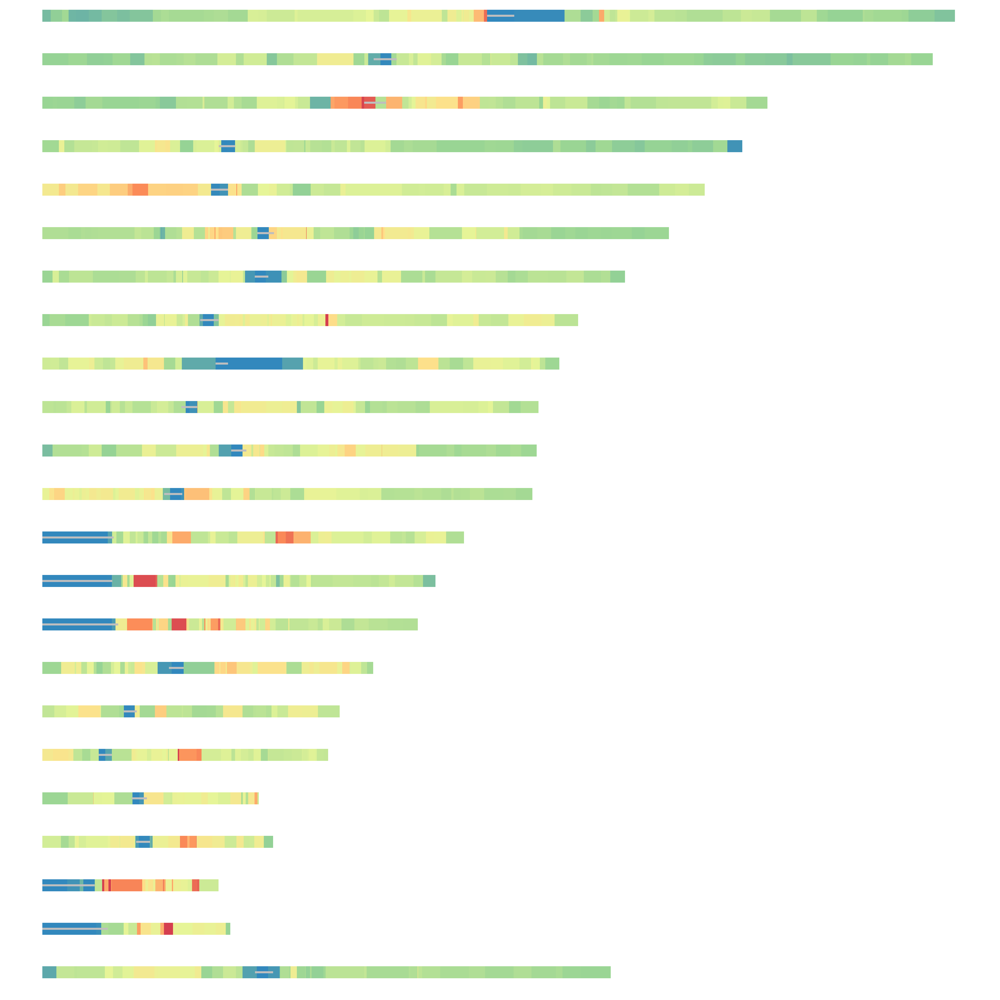
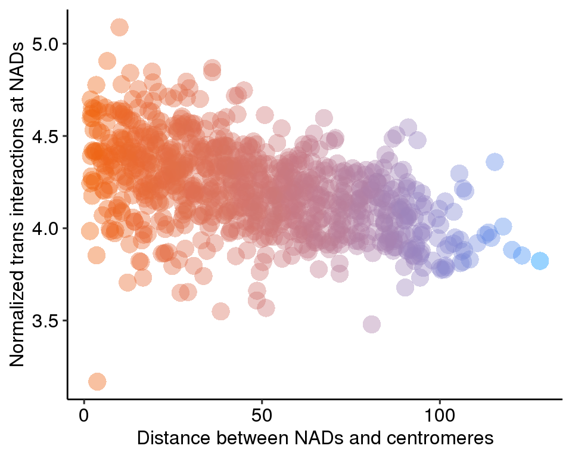
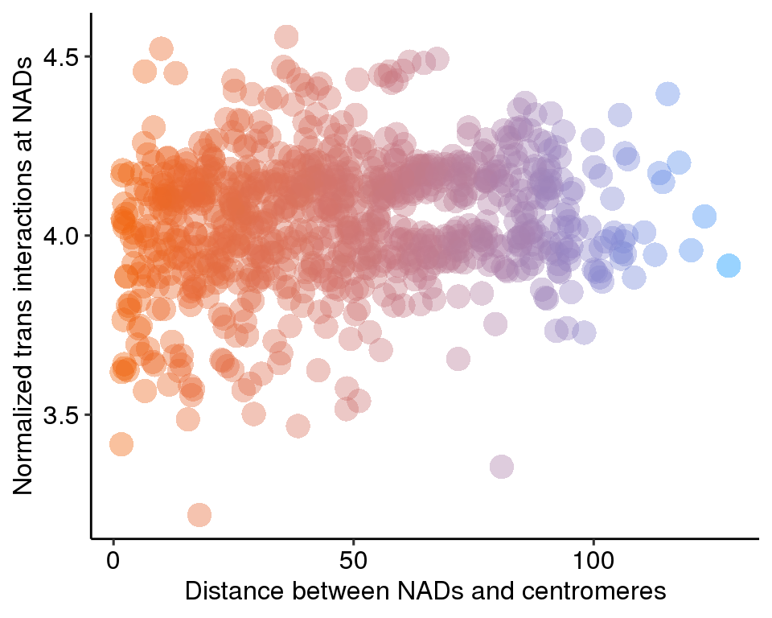

6 Figure5
6.1 Fig.5a
A = read.table('data/5a_data',header = T)
head(A)## chr start stop distance
## 1 chr1 1 2300000 0.2707362
## 2 chr1 100756000 109095000 0.8937277
## 3 chr1 109095000 110665000 0.6043864
## 4 chr1 110665000 113045000 0.9570571
## 5 chr1 113045000 114500000 0.7587998
## 6 chr1 114500000 114967000 0.9507344centromere = read.table('data/acen.bed')
centromere.wgs <- split(centromere, f = centromere$V1)
band.wgs <- split(A, f = A$chr)
library(RColorBrewer)
color = rev(colorRampPalette(c(brewer.pal(6,"Spectral")))(201))
color_table = data.frame(color,breaksList = seq(0, 2, by = 0.01))
rc.set.cytoband=function(cyto.info){
band.color = c()
for(i in 1:length(cyto.info$distance)){
color_table$t = abs(color_table$breaksList - cyto.info$distance[i])
t = as.character(color_table[which.min(color_table$t),1])
band.color = c(band.color,t)
}
cyto.info[["BandColor"]] = band.color
cyto.info
}
BandPlot <- function(band,Cen){
col <- rc.set.cytoband(band)
col.band <- col$BandColor
yb <- rep(0, nrow(band))
yt <- rep(0.6, nrow(band))
x = seq(0, 250e06, 1e06)
par(mar = c(0,1,0,1))
plot(x = x, y = rep(0, length(x)), type = "n", xlab = " ", ylab = " ", bty="n", axes = F)
rect(xleft = band$start, xright = band$stop, ybottom = yb, ytop = yt, col = col.band,border = NA)
rect(xleft = Cen[,2], xright = Cen[,3], ybottom = 0.25, ytop = 0.35, col = 'gray',border = NA)
}
layout(matrix(seq(1,23), nrow = 23, ncol = 1, byrow = T))
for(i in 1:23){
if(i == 23){
chr = "chrX"
}else{
chr = paste0("chr", i)
}
BandPlot(band.wgs[[chr]],centromere.wgs[[chr]])
}
dev.off()## null device
## 16.2 Fig.5b
suppressMessages(library(ggpubr))
d = read.table('data/5b_data',header = T)
head(d)## V1 V2 V3 V4 V5 distance norm pc
## 1 chr10 100229000 101035000 147728 60482000 60.4820 4.263128 -12.41273
## 2 chr10 106166000 111625000 1166307 68745500 68.7455 4.329700 -20.67590
## 3 chr10 112837000 114002000 198057 73269500 73.2695 4.230464 -25.20026
## 4 chr10 116925000 118385000 238417 77505000 77.5050 4.212984 -29.43580
## 5 chr10 119329000 119993000 100798 79511000 79.5110 4.181284 -31.44190
## 6 chr10 120147000 120261000 15475 80054000 80.0540 4.132726 -31.98509d$pc <- predict(prcomp(~distance+norm, d))[,1]
ggplot(d, aes(distance, norm, color = pc)) +
geom_point(shape = 16, size = 5, show.legend = FALSE, alpha = .4) +
theme_pubr()+ylab('Normalized trans interactions at NADs')+
xlab('Distance between NADs and centromeres')+
scale_color_gradient(low = "#0091ff", high = "#f0650e")
6.3 Fig.5c
suppressMessages(library(ggpubr))
d = read.table('data/5c_data',header = T)
head(d)## V1 V2 V3 V4 V5 distance norm pc
## 1 chr10 100229000 101035000 106443 60482000 60.4820 4.120782 -12.41311
## 2 chr10 106166000 111625000 810935 68745500 68.7455 4.171873 -20.67665
## 3 chr10 112837000 114002000 168434 73269500 73.2695 4.160104 -25.20064
## 4 chr10 116925000 118385000 211296 77505000 77.5050 4.160538 -29.43614
## 5 chr10 119329000 119993000 97755 79511000 79.5110 4.167971 -31.44214
## 6 chr10 120147000 120261000 17201 80054000 80.0540 4.178649 -31.98515d$pc <- predict(prcomp(~distance+norm, d))[,1]
ggplot(d, aes(distance, norm, color = pc)) +
geom_point(shape = 16, size = 5, show.legend = FALSE, alpha = .4) +
theme_pubr()+ylab('Normalized trans interactions at NADs')+
xlab('Distance between NADs and centromeres')+
scale_color_gradient(low = "#0091ff", high = "#f0650e")